Energy
Start from an empty Scratch project (rpf.io/scratch-new — remember to delete the cat sprite).
Create a new sprite, clicking 'Paint', rather than 'Choose a Sprite'.
Zoom in until the chequered background becomes large, then select the Circle tool, change the Fill colour to a bright green, and place the mouse pointer 3 chequered squares up and left from the centre.
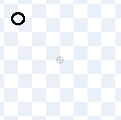Click and drag the mouse to the point that's 3 chequered squares down and right from the centre.
Note: it's important that your circle is the correct size and correctly centred!
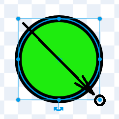Click on the Code tab, and add some code that
- hides the sprite when the green flag is clicked, then
- creates a clone of itself, and
- shows the clone once it's been created.
Does your code look like this?
Create a variable named 'energy' being sure to select 'For this sprite only'.
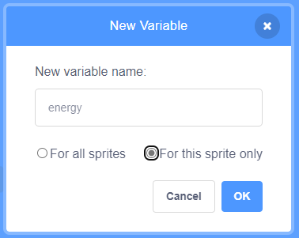If a variable is 'For all sprites' then every sprite can read its value, and every sprite can change its value — there's only the one value. We're about to fill a world with lots of life forms, and each life form will have its own separate store of energy, so each needs its own energy variable.
Life forms are born with some energy, they gain energy when they feed, but they lose energy all the time, and they die if they don't have enough to eat.
Let's start by setting a life form's energy to 100 (for now) when it's born, and then let it repeatedly lose 1 energy. Once it runs out of energy, it should die. Does your code look like this?
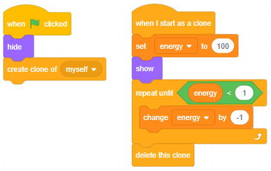Click the green flag a few times. Do you see a green circle flash briefly on the screen then disappear?
In each brief flash, a life form is being born, losing energy 100 times, then dying. It all happens much too fast, because computers count super fast... could you count backwards from 100 to 0 in less than a second?
However, we can slow it down and also watch the energy decrease with just one change. Set the sprite's brightness inside the repeat loop:
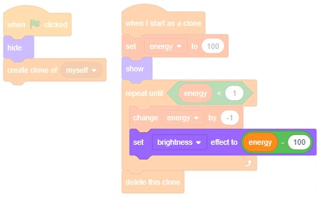We want the sprite to be black when the energy is zero, but we get black by setting the brightness effect to -100.
If you click the green flag now, what happens?
Our life form died because we didn't feed it — let's feed it now.
Feeding
Grab a pick random 1 to 10 and click it a few times. You should see something pop up, after each click, showing a random number between 1 and 10.
In some games where you roll dice, special things happen if you roll a 6, like you get to roll again. In our world, if the 'pick random' block gives us a 10, our life form will feed. Think of it like a drop of rain randomly falling on a plant.
So, set the energy to 100 if the random number is 10:
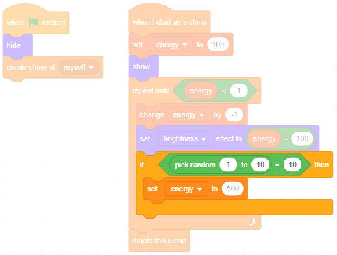What happens if you click the green flag now?
It's time for our life form to spawn some children.
Spawning
In our world, our life forms will reproduce by randomly spawning clones of themselves.
Once we let our life forms spawn children, those children will also be able to spawn children, and so will those children, and so on. Since computers are crazy fast, you could very quickly end up with so many life forms that your browser crashes. Do you promise not to press the green flag until you're instructed to?
Right-click on the 'if-then' block, click 'Duplicate', and click to drop the duplicated script inside the repeat-loop.
But this time, if the 'pick random' block gives us a 10, we don't want to set the energy to 100, so delete the set energy to 100 and nest a create clone of myself inside the if-then instead:
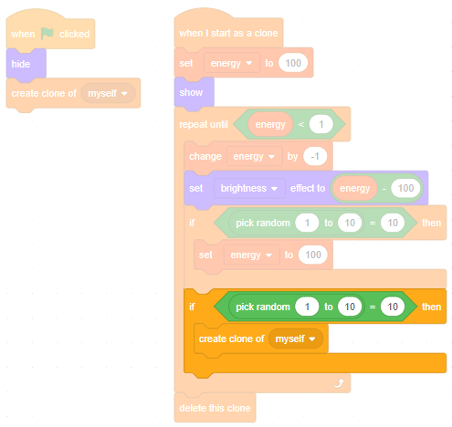With our code like this, where will children be spawned?
We want children to be spawned next to their parents, not behind them. To spawn next to its parent, a child must move 30 steps as soon as it's born. Also, to avoid always spawning to the right of the parent, we should point it in a random direction first:
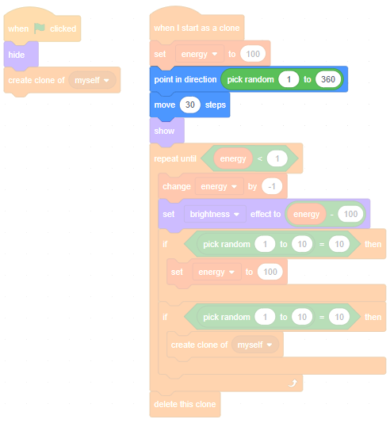We've just stopped parents and children from overlapping, but not grandparents and granchildren! We need to delete newly created sprites if they overlap another sprite. Grab a touching mouse-pointer — can it be changed to touching Sprite1?
It doesn't make sense to ask if a sprite is touching itself (it always is, or always isn't, depending how you think about it) so the Scratch website doesn't put that option in the dropdown. But we have clones of a sprite, and it does make sense to ask if clones are touching each other.
Fortunately there's a trick to get round this problem.
- Create a new sprite (it doesn't matter what it looks like, we'll delete it in just a moment)
- Grab a touching mouse-pointer and change it to touching Sprite1 (note: we have that option now, because we're in a new sprite)
- Use Ctrl + C to copy this code block, click back to Sprite1, and use Ctrl + V to paste it into Sprite1's code area
- Delete the new sprite you just created
Now that you have the touching Sprite1 block that you need, add some code to delete a newly created sprite if it overlaps another:
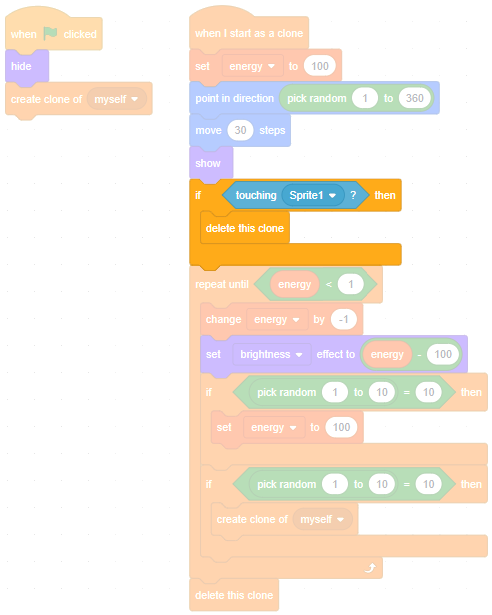Click the green flag. What happens?
Good. But we're actually cheating — parents are not sharing their energy with their children, they're just creating energy from nowhere. Let's fix that.
Genes
Create a variable named starting energy being sure to select 'For this sprite only'.
Set starting energy to 10 when the green flag is clicked.
When a new life form is born, stop setting its energy to 100, set its energy to starting energy instead.
After a life form has spawned a child, decrease its energy by starting energy, i.e. change it by 0 - starting energy.
Does your code look like this:
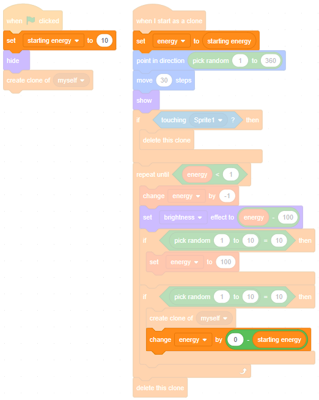Click the green flag. You probaby see lots of black circles — hungry life forms — being born and then dying. This is because they are now being born with only 10 energy, and they often run out of energy before they have a chance to feed.
Change set starting energy to 10 to set starting energy to 70.
Click the green flag again. Now you probaby see lots of parents turning black, maybe even dying. Why?
You can think of the starting energy like a 'gene', controlling how much energy a parent shares with its child. And you can think of what we just did as creating two different species: one that spawned hungry children, one that spawned energetic children but left the parent hungry.
Now it's time to let those genes mutate.
Mutation
Duplicate the last if-then block and snap it just before the repeat-loop. Throw away the blocks inside it, and add a change starting energy by 1 instead:
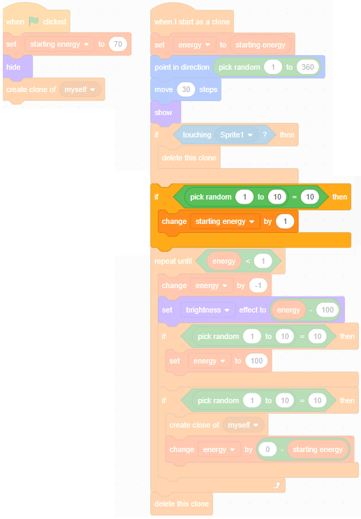We want the starting energy to be able to increase or decrease, so change change starting energy by 1 to change starting energy by pick random -10 to 10.
What will this new bit of script do?
This is like a 'mutation' in a real life form.
We want to be able to see our life forms mutating. Set the color effect to the starting energy just before the repeat-loop:
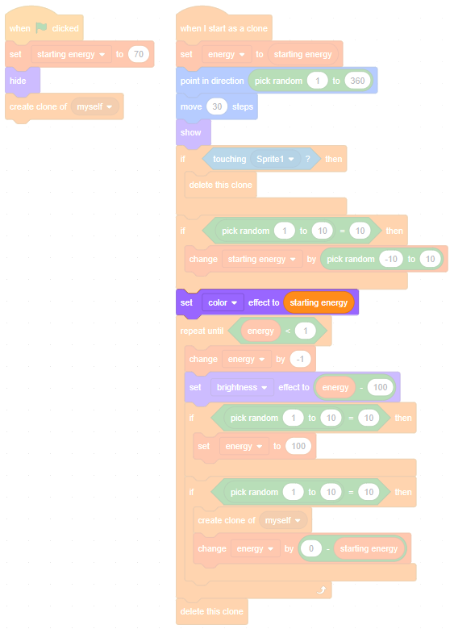Can you guess what colour the first life forms will be?
Remember that the first life form will have starting energy 70, so the color effect of 70 will 'spin' the green around the colour wheel until it ends up blue.
Click the full screen button, click the green flag and watch your life forms for about five minutes. Look out for species with different colours appearing.
Uncheck the variables' checkboxes:
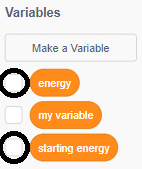I don't know exactly what you'll see, because so much here is random. If you're lucky you might see some purple life forms appear — those spawn very energetic children. However, they find it hard to survive when passing so much energy to their children, so they tend to die out.
You're more likely to see turquoise life forms appear, and then green ones finally taking over. This is natural selection — the better a creature is at surviving, the more likely it will survive and pass its genes on.
Remember that the more green a life form looks, the less energy is being passed to its children. We see this in nature — it's very common to find creatures which spawn hundreds of children, most of which die, because only a few need to survive to spawn the next generation.
Next steps
Exit full screen, and save your game.
See if you can make it better.
Could you create a 'gene' for size, let it mutate, and see if bigger or smaller life forms are more successful?
These life forms are a bit like plants — could you create some 'herbivores' that move around and eat them?
Could you create some carnviores to eat the herbivores?
What ideas can you come up with?
What did you think of this module?
I didn't like it

It was OK

I loved it